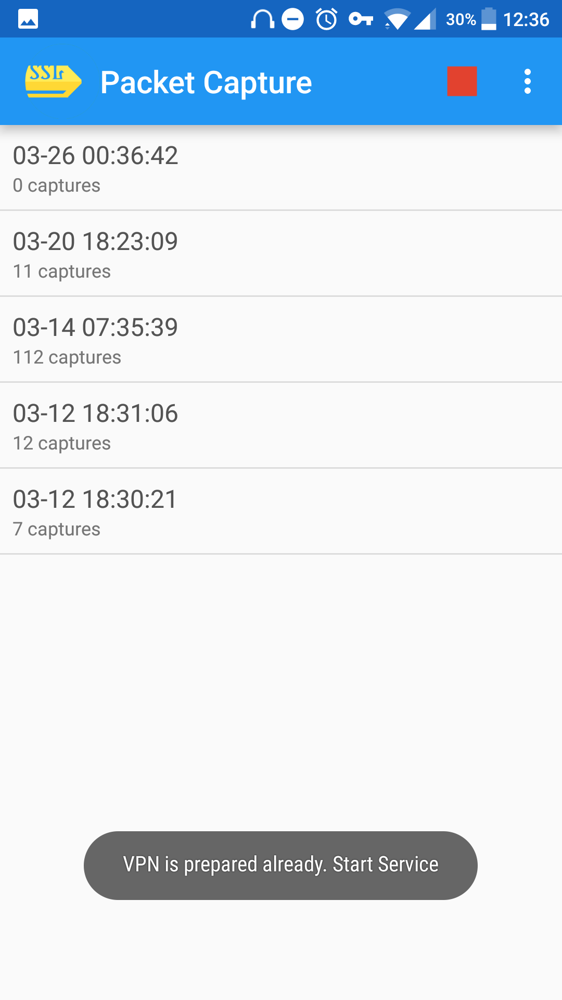
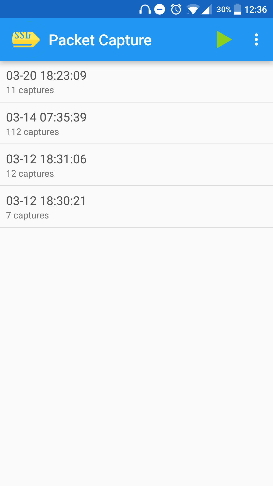
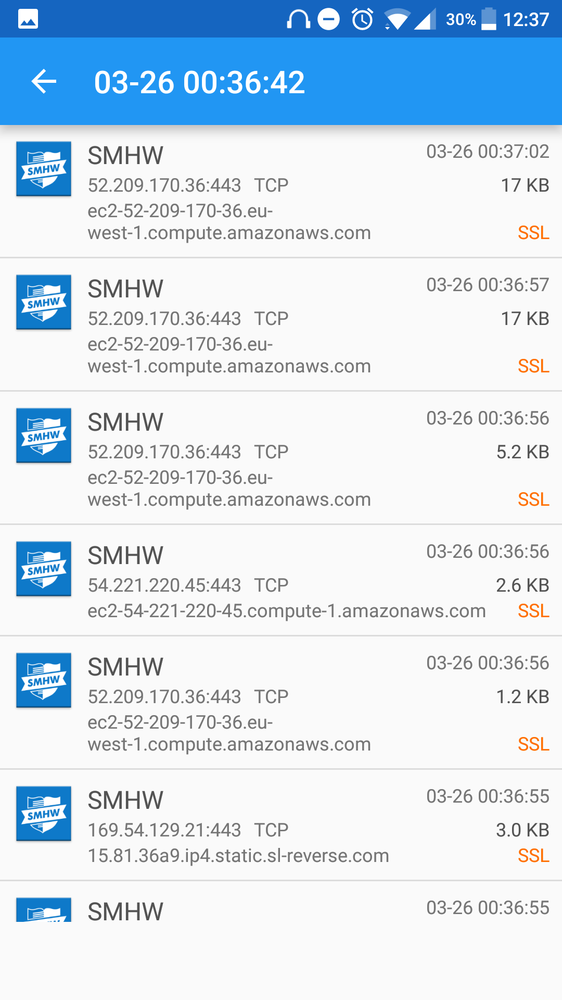
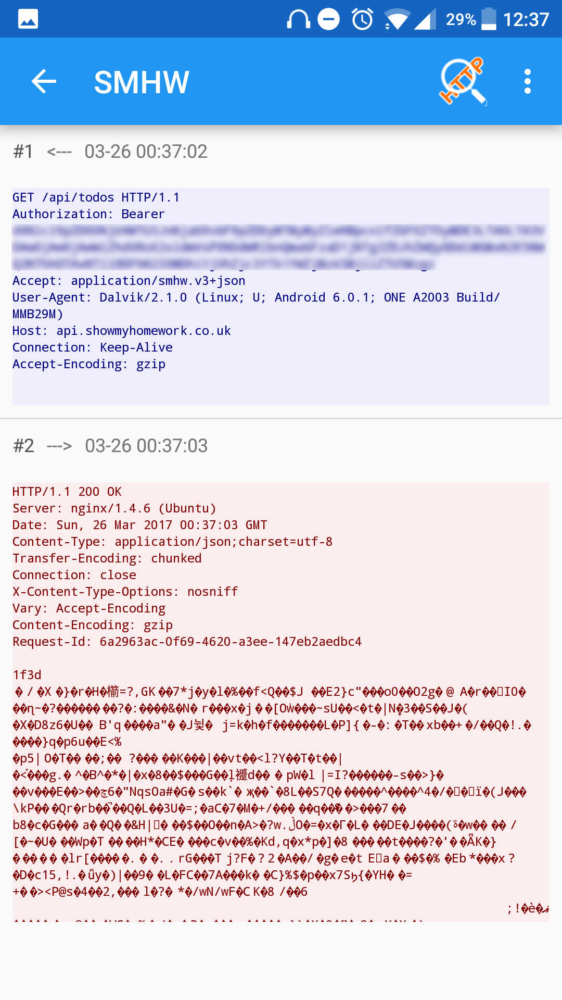
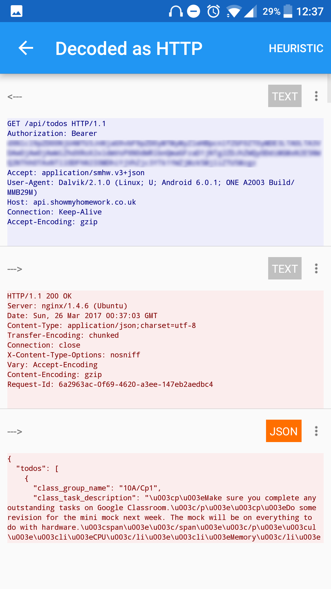

Finding & Using Hidden APIs
Disclaimer
Before following this tutorial I would recommend asking the owner/owners of the APIs if they permit external usage of their APIs
Tutorial
For my Priory App I wanted to intergrate Show My Homework and E-Praise together, unfortunately neither have public APIs avaliable. To find out how SMHW and Epraise works I used an app called Packet Capture which installs a ssl certificate to your device so it can view network traffic though https as well as http. This app is only avaliable on Android but works on non-rooted devices which is the reason I use this app over others.
1) So, this app is pretty simple to use, to start logging network traffic just click the play icon in the top right corner.

2) Then all you have to do is use the app that you want to log traffic for, some apps may not work like Instagram for example.
3) Return back to the app and stop the logging, on this list you can see all the captures that you have ran, click on the most recent (the top one) to view the captures

4) This list shows all the network requests for each app during the time which you were logging, click on one to view the data sent and received

5) This shows the raw data sent between the device and the server, you can see the url and headers but unfortunately the content is unreadable and just a mix of symbols

6) To view this content click on the top right icon labelled “http”, this shows the decoded data and is the reason that the app installs the certificate on the first run.

This app was very useful for helping me find out about the SMHW and Epraise APIs for example, what urls I have to request with what headers and what information it will return.
Thanks for reading :)